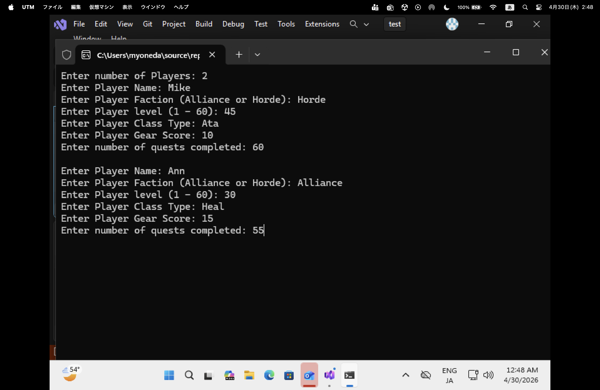
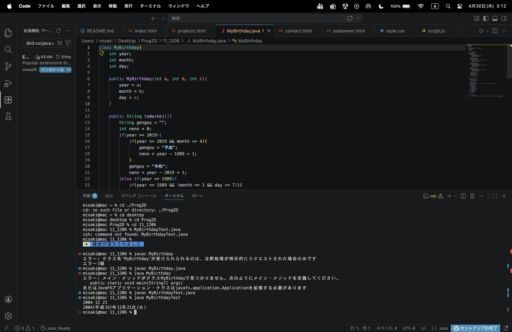

3D Action Game (Unity)
A game project developed as part of my coursework at ATU using Unity and C#. The GIF demonstrates the player controls and game mechanics I implemented.
View Source CodeMy Work
A collection of projects I have developed through my courcework at ATU. These works demonstrate my growth in programming.
A game project developed as part of my coursework at ATU using Unity and C#. The GIF demonstrates the player controls and game mechanics I implemented.
View Source Code
A C++ program managing character data with classes and vectors.
View Source Code
A Java application that converts Western calendar dates into the traditional Japanese era system. It demonstrates proficiency in Java class structures and conditional logic.
View Source Code